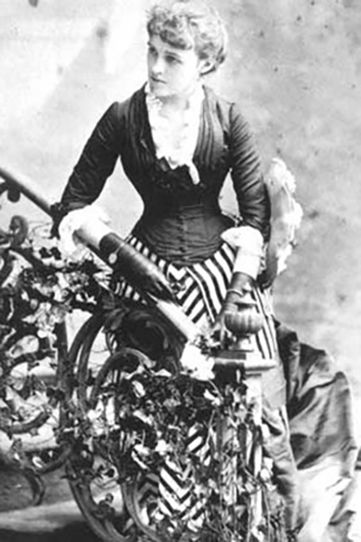
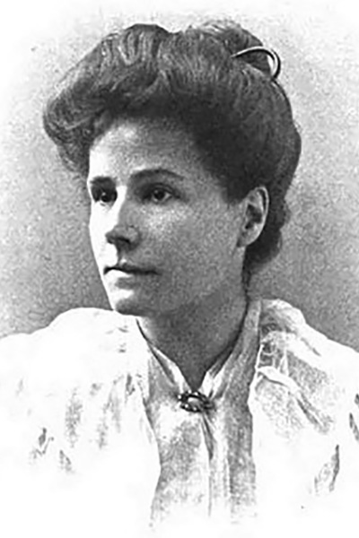

Unquiet Spirits - Women's Weird Fiction
Women's Weird
On March 8, 2020, I picked up a copy of Women's Weird - an anthology by Melissa Edmundson of Victorian ghost stories from women authors. Given the significance of the date (International Women's Day), perhaps it was fitting that it caught my eye in the bookstore that day.
I didn't anticipate that I would immediately be compelled to dive into the genre more deeply, or that it would shape the perfect reading list against the backdrop of the strange times to come. A week later, when everything locked down due to the global pandemic, out of work and looking for a good distraction, this book was the first one I picked up. The themes in this collection (and all the writers that it subsequently led me to) became the perfect outlet to help cope with the strange, surreal situation outside. The stories collected in this book led me to rediscover a genre I had always enjoyed, and gave me the chance to explore more deeply several themes that feel relevant even a century later.
The Guardian featured an article discussing this book, and its sequel that was released in October this year.
The Authors and their Stories
Edith Wharton
Kerfol
"After that she dared not make a pet of any other dog; and her loneliness became almost unendurable. Sometimes, when she crossed the court of the castle, and thought no one was looking, she stopped to pat the old pointer at the gate. But one day as she was caressing him her husband came out of the chapel; and the next day the old dog was gone..."
May Sinclair
Where their Fire is not Quenched
"They were being drawn towards each other across the room, moving slowly, like figures in some monstrous and appalling dance, their heads thrown back over their shoulders, their faces turned from the horrible approach. Their arms rose slowly, heavy with intolerable reluctance; they stretched them out towards each other, aching, as if they held up an overpowering weight. Their feet dragged and were drawn."
Rhoda Broughton

The Man with the Nose
"I tell you that as sure as I sit here—as sure as you stand there—I saw him—him—the man I saw in my dream, if it was a dream. There was not a hair’s-breadth of difference between them—and he was looking at me—looking..."